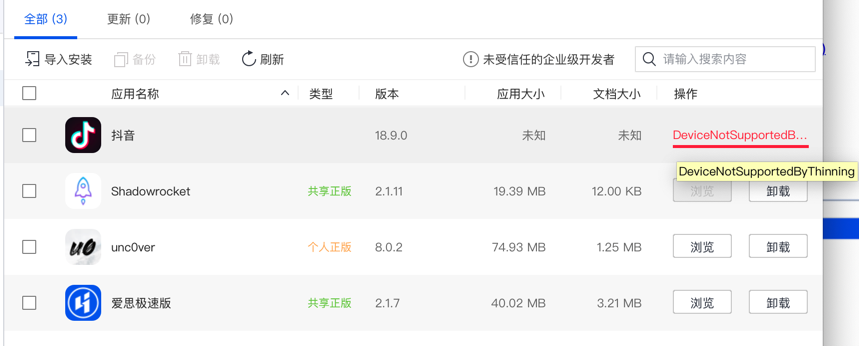
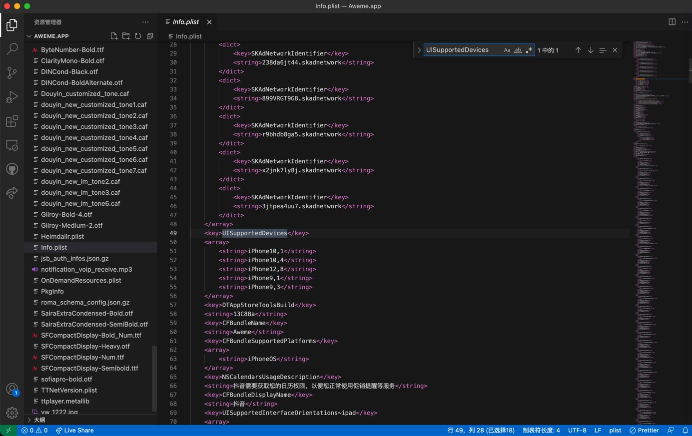

DeviceNotSupportedByThinning
- 现象：此处把砸壳后的抖音ipa去安装到越狱iPhone中报错：
DeviceNotSupportedByThinning- 
- 原因：
- 此处的（抖音的app的）ipa是，Thinning瘦身后的
- 即：上传到AppStore后的，只支持部分iPhone机型的安装包
- 其中所支持的设备，不包含当前iPhone机型
- 具体细节
Aweme抖音/已脱壳/Payload/Aweme.app/Info.plist- 
解决办法：
- 方法1：把当前机型，加到其支持列表中
- 方法2：直接去掉机型限制
具体步骤
方法1
- 方法1：
解压ipa，得到Payload目录，找到：
Payload/xxx.app/Info.plist
比如此处的：
Aweme抖音/已脱壳/Payload/Aweme.app/Info.plist
编辑：UISupportedDevices部分，加上自己的机型
此处最后是：
<key>UISupportedDevices</key>
<array>
<string>iPhone9,1</string>
<string>iPhone9,2</string>
<string>iPhone9,3</string>
<string>iPhone9,4</string>
<string>iPhone10,1</string>
<string>iPhone10,2</string>
<string>iPhone10,3</string>
<string>iPhone10,4</string>
<string>iPhone10,5</string>
<string>iPhone10,6</string>
<string>iPhone11,2</string>
<string>iPhone11,4</string>
<string>iPhone11,6</string>
<string>iPhone11,8</string>
<string>iPhone12,1</string>
<string>iPhone12,3</string>
<string>iPhone12,5</string>
<string>iPhone12,8</string>
<string>iPhone13,1</string>
<string>iPhone13,2</string>
<string>iPhone13,3</string>
<string>iPhone13,4</string>
<string>iPhone14,2</string>
<string>iPhone14,3</string>
<string>iPhone14,4</string>
<string>iPhone14,5</string>
</array>
注：
自己的机型，可以去参考：
比如：
iPhone7P是iPhone9,2 （另外：美版是iPhone9,4）
方法2
- 方法2：
- 直接把
Info.plist中的UISupportedDevices的部分，去掉。- 注：未验证是否有效，估计是有效的。
- 直接把